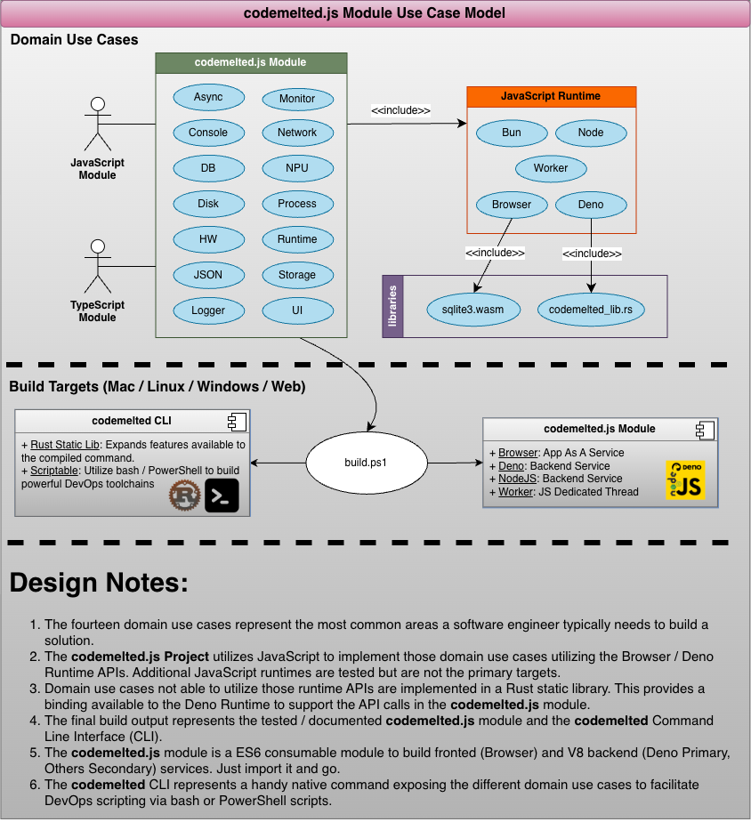

Object-Oriented Analysis and Design (OOAD)
Table of Contents
INTRODUCTION
Purpose
The purpose outlines the reason for creating the process. It answers the question “why is this being done?” and provides direction, motivation, and clarity for all stakeholders involved. A well-defined purpose sets the overarching goals and desired outcomes, ensuring that everyone understands the intent behind the document.
Scope
The scope specifies the boundaries, extent, and limitations of the process. It answers “what is included and what is excluded?” and defines the deliverables, tasks, responsibilities, and areas covered. Scope ensures that the project remains focused and manageable, preventing unnecessary expansion or deviation from the original goals.
Terms
Breakdown of acronyms and definitions
References
The following are the references to the external SDK documentation to implement the fourteen domain use cases for the codemelted.js module.
C++ Reference
Mozilla Developer Network (MDN)
- Beacon
- Bluetooth
- Broadcast Channel
- CookieStore
- Console
- EventSource
- EventTarget
- Fetch
- File System
- Geolocation
- Input File
- localStorage
- Location
- HTMLAnchorElement Download
- Navigator
- Promise
- Screen
- sessionStorage
- USB
- Using Custom Elements
- Web Serial
- Web MIDI
- WebSocket
- WebRTC
- WebTransport
- Window
- Worker
Rust STD
web.dev
FUNCTIONAL ANALYSIS

| ID | Link | Description |
|---|---|---|
| UC-01 | Async | To Be Developed |
| UC-02 | Console | To Be Developed |
| UC-03 | DB | To Be Developed |
| UC-04 | Disk | To Be Developed |
| UC-05 | HW | To Be Developed |
| UC-06 | JSON | To Be Developed |
| UC-07 | Logger | To Be Developed |
| UC-08 | Monitor | To Be Developed |
| UC-09 | Network | To Be Developed |
| UC-10 | NPU | To Be Developed |
| UC-11 | Process | To Be Developed |
| UC-12 | Runtime | To Be Developed |
| UC-13 | Storage | To Be Developed |
| UC-14 | UI | To Be Developed |
NON-FUNCTIONAL ANALYSIS
Usability
State the requirements that affect usability.
Reliability
State the requirements for reliability
Performance
State the performance characteristics of the system, expressed quantitatively where possible and related to use cases where applicable.
Supportability
State the requirements that enhance system supportability or maintainability
Design Constraints
State the design or development constraints imposed on the system or development process.
Documentation
State the requirements or user and/or administrator documentation.
Purchased Components
List the purchased components used with the system, licensing or usage restrictions, and compatibility/interoperability requirements
Licensing and Security
Describe the licensing and usage enforcement requirements or other restrictions for usage, security, and accessibility
Legal, Copyright and Other Notices
Describe the licensing and usage enforcement requirements or other restrictions for usage, security, and accessibility.
Applicable Standards
Reference any applicable standards and the specific sections of any such standards that apply.
Internationalization and Localization
State any requirements for support and application of different user languages and dialects
Physical Deliverables
Define any specific deliverable artifacts required by the user or customer
Installation and Deployment
Describe any specific deliverable artifacts required by the user or customer
DESIGN ANALYSIS
Define the interfaces that must be supported by the application. Utilize necessary UML and modeling definitions to reflect it.
Communication Interfaces
Hardware Interfaces
Software Interfaces
Module Core

User Interfaces
TRACEABILITY
Not Applicable.